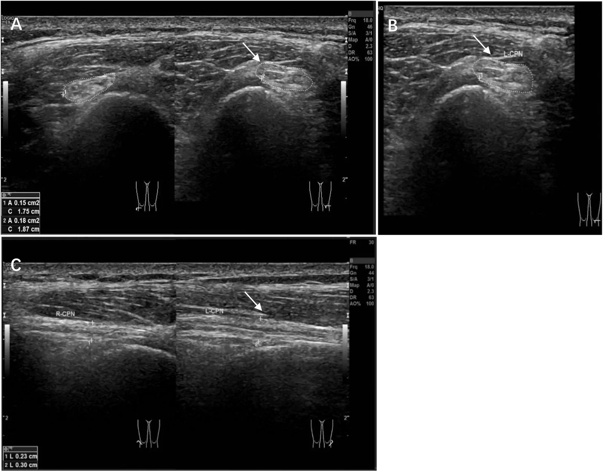
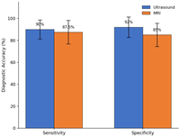

3842 — Chèn ép thần kinh mác chung tại cổ xương mác: "bàn chân rũ" không đau lưng thì đừng đi tìm rễ L5
Tags: pattern:ban-chan-ru pattern:day-than-kinh pattern:chen-ep-than-kinh pattern:mot-ben vung:chi-duoi vung:khop-goi anatomy:than-kinh-mac protocol:sieu-am-than-kinh protocol:MRI-than-kinh
Mức chắc chắn (certainty): tổng hợp y văn (literature synthesis) — ghép ca nguyên văn 16 tuổi chèn ép thần kinh mác chung trong đợt tăng trưởng nhanh (Front Pediatr 2026, PMCID PMC13690938, CC BY 4.0) và bài tổng quan định khu "bàn chân rũ" theo giải phẫu – điện cơ – hình ảnh (J Spine Res Surg 2026, PMCID PMC13591402, CC BY 4.0).
Câu chốt: bàn chân rũ một bên, không đau lưng, không yếu cơ đùi → nghĩ thần kinh mác chung tại cổ xương mác, và câu hỏi hình ảnh chỉ có hai: (1) thần kinh có dày khu trú ở cổ xương mác không? (2) có cấu trúc chèn ép (nang, u sụn xương, dây xơ) không? Ba con số định khung: siêu âm độ phân giải cao nhạy 90% / đặc hiệu 92%, nhỉnh hơn MRI 87,5% / 85% ở 40 ca nghi ngờ (PMC13591402); thần kinh mác chung trong ca dày 0,18 cm² so với 0,15 cm² bên đối diện và đường kính trước–sau 3,0 mm so với 2,3 mm (PMC13690938); dây xơ 3 × 1 mm được giải ép, sức cơ hồi phục sau 14 ngày.
1. Tổng quan bệnh học – cơ chế hình ảnh (TẠI SAO)
1.1. Giải phẫu: vì sao cổ xương mác là điểm yếu nhất của chi dưới
- Thần kinh mác chung tách từ thần kinh tọa, chạy chếch ra ngoài, bọc quanh cổ xương mác rồi vào ống mác (peroneal tunnel) — ống xơ–xương có thành sau là cổ xương mác, thành trước là mạc sâu + vòm xơ của nguyên ủy cơ mác dài; trong ống hoặc ngay dưới ống, thần kinh chia nhánh nông và nhánh sâu.
- TẠI SAO dễ chèn ép: thần kinh nằm nông, áp sát xương, ít mô mỡ đệm, biên độ di động nhỏ; mọi lực ép ngoài (gối vắt chéo, ngồi xổm lâu, bó bột, nẹp) hoặc căng (gấp gối, tăng chiều dài chi) đều dồn vào cùng một điểm hẹp.
- TẠI SAO yếu cơ mà không teo ngay: chèn ép trước hết gây mất myelin khu trú (neurapraxia) — dẫn truyền chậm/block nhưng sợi trục còn; chỉ khi kéo dài mới thoái hóa sợi trục (axonopathy) → teo cơ, mất điện thế vận động. Đây là lý do điện cơ giúp định thời gian, còn siêu âm/MRI định vị trí.
1.2. TẠI SAO trên ảnh lại thấy đúng chỗ dày
- Chỗ chèn ép → ứ trệ dòng chảy sợi trục (axonal transport) → phù nội sợi và quanh sợi → thần kinh to ra khu trú, giảm âm, mất mẫu bó (loss of fascicular pattern) trên siêu âm; trên MRI là T2/STIR tăng tín hiệu, dày thần kinh, và phù cơ do mất thần kinh (denervation edema) ở cơ trước xương chày — dấu hiệu gián tiếp nhưng rất sớm.
- TẠI SAO đo diện tích cắt ngang (CSA) chứ không chỉ "to hay không to": thần kinh người gầy, chỗ chia nhánh, hoặc tư thế đầu dò đều làm ảnh hưởng cảm nhận; CSA tại điểm to nhất + so bên đối diện cùng tư thế là cách duy nhất khách quan. Ca PMC13690938: 0,18 cm² so với 0,15 cm² (+20%), trục dài 0,30 cm so với 0,23 cm.
- TẠI SAO có dây xơ mà siêu âm lần đầu "bình thường": lần đầu đầu dò đặt vào mô mềm quanh khớp gối, không chạy dọc đường đi thần kinh → bỏ sót. Quy tắc: khảo sát thần kinh phải đi theo thần kinh, từ khoeo xuống cổ xương mác và vào ống.
1.3. Ngưỡng định lượng nằm lòng
| Đại lượng | Số liệu | Nguồn |
|---|---|---|
| Siêu âm phân giải cao (n = 40 ca nghi ngờ) | nhạy 90%, đặc hiệu 92% | PMC13591402 |
| MRI thường (cùng 40 ca) | nhạy 87,5%, đặc hiệu 85% | PMC13591402 |
| CSA thần kinh mác chung trong ca bệnh | 0,18 cm² (bên đối diện 0,15 cm²) | PMC13690938 |
| Đường kính trước–sau | 3,0 mm (đối diện 2,3 mm) | PMC13690938 |
| Trục dài đoạn dày | 0,30 cm (đối diện 0,23 cm) | PMC13690938 |
| Dây xơ chèn ép (mổ) | 3 × 1 mm, bắc qua bao ngoài thần kinh | PMC13690938 |
| Dẫn truyền vận động mác chung | 4,13 ms (đối diện 3,23 ms; bình thường ≤ 4,5 ms) | PMC13690938 |
| Biên độ CMAP | 6,2 mV (đối diện 6,7 mV; bình thường > 5,0 mV) | PMC13690938 |
| Tốc độ dẫn truyền vận động | 48,9 m/s (đối diện 48,3; bình thường > 45 m/s) | PMC13690938 |
| SNAP thần kinh mác nông | 11,1 µV (đối diện 21,8 µV) | PMC13690938 |
| Thần kinh tọa: nhánh mác nặng hơn nhánh chày | 64% (n = 100) | PMC13591402 |
| Trong bệnh thần kinh tọa | EMG cơ trước xương chày bất thường 92%, CMAP cơ duỗi ngắn ngón chân giảm/mất 80% | PMC13591402 |
| Hồi phục sau giải ép (ca) | cải thiện ngày 14, tiếp tục tháng thứ 3 | PMC13690938 |
| Tăng trưởng trước khởi phát (ca) | +6 cm chiều cao và +1 cỡ giày trong 6 tháng | PMC13690938 |
- Chưa rõ — cần tra: chưa có ngưỡng CSA tuyệt đối (cm²) được thẩm định đa trung tâm cho thần kinh mác chung ở trẻ; ca này dùng so sánh bên đối diện, không dùng một con số tuyệt đối.
2. Mẫu hình + chẩn đoán phân biệt theo vị trí (Gamut)
- Rễ L5: yếu dorsiflexion + duỗi ngón cái, nhưng yếu cả đảo bàn chân (cơ chày sau, thần kinh chày) và yếu dạng đùi (cơ mông nhỡ, thần kinh mông trên); đau lưng, nghiệm pháp căng rễ; SNAP bình thường vì tổn thương trước hạch.
- Đám rối thắt lưng–cùng: nhiều rễ, nhiều dây → mẫu hình không khớp một dây; bệnh cảnh chậu/ sau phúc mạc, xạ trị, máu tụ.
- Thần kinh tọa (ưu thế nhánh mác): 64% ca thần kinh tọa có nhánh mác nặng hơn; phân biệt bằng cơ nhị đầu đùi đầu ngắn (do nhánh mác của dây tọa chi phối, trên khớp gối) — cơ này bất thường = tổn thương ở trên cổ xương mác.
- Thần kinh mác chung tại cổ xương mác: yếu gấp mu bàn chân + duỗi ngón + đảo ngoài (cơ mác), giữ nguyên gấp lòng và đảo trong; Tinel ở cổ xương mác; cảm giác mặt trước ngoài cẳng chân và mu bàn chân (trừ kẽ ngón 1 do dây mác sâu).
- Dây mác sâu / dây mác nông (tổn thương xa hơn): chỉ yếu duỗi ngón/duỗi cổ chân (sâu) hoặc chỉ đảo ngoài + cảm giác mu chân (nông) — không có dày thần kinh ở cổ xương mác.
- Không do thần kinh: đứt gân cơ trước xương chày (không mất cảm giác, có khuyết gân), hội chứng khoang cẳng chân (đau nhiều, căng), bệnh cơ, tổn thương tháp (đột quỵ) — nhớ dấu hiệu tháp để không bỏ.
- Gợi nhớ FOOT DROP: Fibular neck, Osteochondroma/ganglion, Overgrowth (tăng trưởng nhanh), Trauma/bó bột, Diabetes, Radiculopathy L5, Obesity/weight loss, Prolonged squatting/crossing.
3. Bảng so sánh phân biệt (ma trận đối chiếu)
| Thực thể (entity) | Hình ảnh điển hình | Chốt vào (rule-in) | Chốt loại (rule-out) | Gợi ý xác nhận |
|---|---|---|---|---|
| Chèn ép thần kinh mác chung tại cổ xương mác | Dày khu trú, giảm âm, mất mẫu bó tại cổ xương mác; CSA tăng so bên lành; MRI T2 tăng tín hiệu thần kinh + phù cơ trước xương chày | Tinel tại cổ xương mác + yếu gấp mu giữ nguyên đảo trong + CSA tăng | Cơ nhị đầu đùi đầu ngắn bất thường → tổn thương trên cổ xương mác | Siêu âm dọc đường đi; EMG; MRI thần kinh |
| Rễ L5 | Không dày thần kinh ngoại biên; thoát vị/ hẹp lỗ liên hợp trên MRI cột sống | Yếu đảo trong + dạng đùi + đau lưng; SNAP bình thường | SNAP giảm → tổn thương ngoại biên (sau hạch) | MRI thắt lưng + EMG kim cơ chày sau/mông nhỡ |
| Bệnh thần kinh tọa ưu thế nhánh mác | Tổn thương tọa trên MRI chậu; cơ nhị đầu đầu ngắn mất thần kinh | Yếu cơ nhị đầu đầu ngắn + yếu nhánh chày kèm | Cơ nhị đầu đầu ngắn bình thường → loại tọa | MRI chậu; EMG 3 tầng |
| Đám rối thắt lưng–cùng | Khối/máu tụ/xạ trị vùng chậu; nhiều dây cùng bất thường | Mẫu hình nhiều rễ, nhiều dây | Mẫu hình một dây → loại đám rối | MRI chậu + EMG nhiều cơ |
| Nang hạch / u sụn xương cổ xương mác | Khối dạng nang cạnh khớp mác–chày trên hoặc u sụn xương có vỏ xương liên tục tủy | Thấy cấu trúc chèn ép + thần kinh bị đẩy | Không thấy khối, thần kinh dày lan toả → nghĩ bệnh thần kinh di truyền | Siêu âm + MRI; X-quang cho u sụn xương |
| Bệnh thần kinh do chèn ép di truyền (HNPP) | Dày thần kinh ở nhiều điểm chèn ép (cổ tay, khuỷu, cổ xương mác), thường hai bên | Tái phát nhiều đợt + tiền sử gia đình | Chỉ một điểm, một bên, có dây xơ khu trú → loại HNPP | Khám toàn bộ dây thần kinh + di truyền |
4. Protocol chụp + hệ phân độ
4.1. Siêu âm thần kinh (bước đầu tiên, rẻ và nhạy nhất)
- Đầu dò linear 12–18 MHz (ca dùng 18 MHz); bệnh nhân nằm ngửa, gối hơi gấp, quét mặt ngoài khoeo → cổ xương mác → ống mác, mặt cắt ngang và dọc.
- Đo CSA tại điểm to nhất và so bên đối diện cùng tư thế; ghi đường kính trước–sau, mẫu bó, độ hồi âm, và tìm cấu trúc chèn ép (nang, u sụn xương, dây xơ, cơ bất thường).
- Đánh giá động: gấp/duỗi gối xem thần kinh có bị căng/kẹp thêm (hữu ích khi siêu âm lúc nghỉ bình thường).
4.2. MRI và điện cơ
- MRI: T1W (giải phẫu), T2 fat-sat/STIR (thần kinh, phù cơ), DWI tuỳ chọn, sau tiêm khi nghi u/nang; trường chụp từ khoeo tới đầu trên xương mác, đủ thấy cơ trước xương chày cho dấu phù do mất thần kinh.
- Điện cơ: dẫn truyền vận động qua cổ xương mác (tìm chậm dẫn truyền khu trú/block), SNAP thần kinh mác nông + sural (phân biệt rễ/ngoại biên), EMG kim: cơ trước xương chày, cơ mác dài, cơ duỗi ngắn ngón chân, cơ nhị đầu đùi đầu ngắn, cơ chày sau, cơ mông nhỡ.
4.3. Ngưỡng và quyết định điều trị
- Bảo tồn trước: bỏ yếu tố ép (không vắt chéo chân, nẹp ban đêm giữ bàn chân trung tính, đệm gối), vật lý trị liệu.
- Mổ giải ép khi: yếu nặng (MRC ≤ 3), thất bại bảo tồn, có cấu trúc chèn ép, dày thần kinh khu trú rõ kèm mất thần kinh trên EMG. Ca PMC13690938 mổ sau ~1 tháng bảo tồn thất bại với MRC 1.
- Chưa rõ — cần tra: không có thời gian bảo tồn tối thiểu được thẩm định bằng thử nghiệm ngẫu nhiên cho chèn ép mác chung; các ca công bố chọn mổ theo mức yếu + cấu trúc chèn ép.
flowchart TD
A[Bàn chân rũ một bên] --> B{Yếu đảo trong hoặc dạng đùi?}
B -->|Có| C[Nghĩ rễ L5/đám rối: MRI thắt lưng + EMG]
B -->|Không| D{Tinel ở cổ xương mác?}
D -->|Có| E[Siêu âm thần kinh mác chung: CSA + cấu trúc chèn ép]
D -->|Không| F[Vẫn siêu âm + EMG 3 tầng]
E --> G{Thấy nang/u sụn xương/dây xơ?}
G -->|Có| H[Mổ giải ép + xử lý nguyên nhân]
G -->|Không| I{CSA tăng so bên lành + mất thần kinh trên EMG?}
I -->|Có| J[Bảo tồn 4-8 tuần; yếu MRC ≤ 3 thì mổ]
I -->|Không| K[Tìm nguyên nhân khác: tọa, HNPP, bệnh cơ]
5. Biến thể bình thường và cạm bẫy
- "Bàn chân rũ = đột quỵ" (bẫy thỏa mãn tìm kiếm): yếu gấp mu đơn thuần ở người trẻ, không liệt nửa người, không dấu tháp → không phải tổn thương tháp; nhưng vẫn phải khám dấu tháp để loại.
- Siêu âm "bình thường" vì quét sai đường: ca PMC13690938 có siêu âm lần đầu không bất thường vì đầu dò đặt vào mô mềm quanh gối, không chạy dọc thần kinh. Không kết luận bình thường nếu chưa thấy thần kinh liên tục từ khoeo tới ống mác.
- Dày thần kinh hai bên = không phải chèn ép đơn thuần: nghĩ HNPP hoặc bệnh thần kinh di truyền — khám cổ tay, khuỷu, cổ xương mác hai bên.
- Không thấy dày nhưng vẫn có bệnh: thể thuần thoái hóa sợi trục có thể CSA gần bình thường → điện cơ quyết định, không loại bệnh chỉ vì ảnh đẹp.
- Cơ nhị đầu đùi đầu ngắn: nếu bất thường trên EMG → tổn thương trên cổ xương mác (thần kinh tọa), không mổ cổ xương mác.
- Bỏ sót u sụn xương: luôn chụp X-quang/CT xương khi siêu âm thấy bờ xương không đều dưới thần kinh; u sụn xương cổ xương mác là nguyên nhân mổ được, dễ bỏ.
6. Tự lượng giá — Blind Quiz
Ca 1 — Nam 16 tuổi, yếu gấp mu bàn chân trái 2 tuần, không đau lưng, không chấn thương; cao thêm 6 cm trong 6 tháng. Ảnh siêu âm bên dưới.

- Gợi ý: MRC gấp mu = 1; Tinel dương ở cổ xương mác; cảm giác giảm mặt trước ngoài cẳng chân và mu chân.
- Câu hỏi: dấu hiệu chính? Đo gì để chứng minh? Ba phân biệt và dấu hiệu loại trừ?
Bấm để hiện đáp án (findings + chẩn đoán)
- Dấu hiệu: thần kinh mác chung trái to khu trú, giảm âm, mất mẫu bó tại cổ xương mác; CSA 0,18 cm² so với 0,15 cm² bên phải, trước–sau 3,0 mm so với 2,3 mm, trục dài 0,30 cm so với 0,23 cm.
- Điện cơ: SNAP mác nông 11,1 µV so với 21,8 µV, CMAP 6,2 mV, có sợi rung ở cơ trước xương chày → tổn thương sợi trục nhẹ, còn bù.
- Chẩn đoán: chèn ép thần kinh mác chung tại cổ xương mác (mổ thấy dây xơ 3 × 1 mm) — loại L5 vì không yếu đảo trong, không đau lưng; loại tọa vì cơ nhị đầu đầu ngắn bình thường.
- Nguồn ảnh: Front Pediatr 2026 (PMC13690938), CC BY 4.0.
Ca 2 — Cùng bệnh nhân, câu hỏi chọn phương thức: siêu âm hay MRI?

- Câu hỏi: đọc hai cặp cột; khi nào vẫn cần MRI dù siêu âm nhỉnh hơn?
Bấm để hiện đáp án
- Siêu âm: nhạy 90%, đặc hiệu 92%; MRI: nhạy 87,5%, đặc hiệu 85% (n = 40, khoảng tin cậy rộng).
- Vẫn cần MRI khi: nghi tổn thương gần hơn (tọa/đám rối), cần trường nhìn rộng, tìm u/nang sâu, hoặc đánh giá phù cơ do mất thần kinh và teo mỡ mạn.
- Nguồn ảnh: J Spine Res Surg 2026 (PMC13591402), CC BY 4.0.
Không dùng để chẩn đoán độc lập khi chưa có người hướng dẫn.
Bài liên quan chéo
- 3841 – Chèn ép thần kinh tọa mạn sau chấn thương/mổ
- 228 – Thoát vị đĩa đệm thắt lưng: phân loại Pfirrmann/Modic
Ảnh
3842_than-kinh-mac_SieuAm_PMC13690938-fig2.webp— siêu âm thần kinh mác chung (A–C), PMC13690938, CC BY 4.0.3842_than-kinh-mac_BieuDo_PMC13591402-fig2.gif— biểu đồ độ chính xác siêu âm vs MRI, PMC13591402, CC BY 4.0.